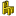

|
| Posizione nel menu |
|---|
| Arch → Arredo |
| Ambiente |
| Arch |
| Avvio veloce |
| E Q |
| Vedere anche |
| 3 viste da mesh |
Descrizione
Lo strumento Arredo offre un modo semplice e comodo per inserire nei progetti degli elementi autonomi non strutturali come ad esempio i mobili, le attrezzature idrosanitarie o gli apparecchi elettrici. Gli Arredi sono basati su forme Part, che permettono loro di beneficiare della solidità e delle possibilità delle geometrie BRep, e che generano una bella vista durante il rendering dei piani e viste in sezione.
{kind=link}
A partire dalla versione 0.17, gli oggetti arredo hanno anche una proprietà HiRes in cui può essere collegato un oggetto Mesh. Quindi gli oggetti arredo possono essere creati in modo che nella vista 3D sia visualizzata tale mesh invece che la loro forma, e questo permette di utilizzare qualsiasi oggetto mesh ad alta risoluzione, ad esempio i mobili dettagliati che si trovano comunemente sui siti web.
{kind=link}
Quando si utilizza l'esportatore OBJ di Arch, tutti gli arredi che si trovano in modalità di visualizzazione Mesh vengono esportati come loro mesh, invece della loro forma.
Utilizzo
- Selezionare una forma Part e, opzionalmente, un oggetto Mesh
- Premere il pulsante  Arredo, o premere i tasti E poi Q
{kind=link}
Opzioni
- Gli elementi Arredo condividono le proprietà e i comportamenti comuni di tutti i Componenti Arch
Proprietà
- DATIModel: Una descrizione del modello di questo arredo.
- DATIUrl: Un URL della pagina del prodotto dove si possono trovare maggiori informazioni su questo arredo.
- DATIMesh: Una rappresentazione Mesh da utilizzare per questo arredo. Quando è impostata, diventa disponibile la modalità di visualizzazione Mesh.
Script
Lo strumento Arredo può essere utilizzato nelle macro e dalla console di Python tramite la seguente funzione:
makeEquipment ( baseObject )
- Crea un oggetto arredo da un oggetto di base (Mesh o Part)
- Restituisce il nuovo oggetto arredo, o nulla se l'operazione fallisce.
Esempio:
import Part, Arch
box = Part.makeBox(2,2,2)
base = FreeCAD.ActiveDocument.addObject("Part::Feature","Box")
base.Shape = box
Arch.makeEquipment(base)